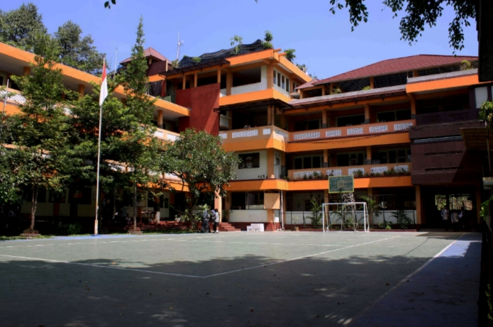
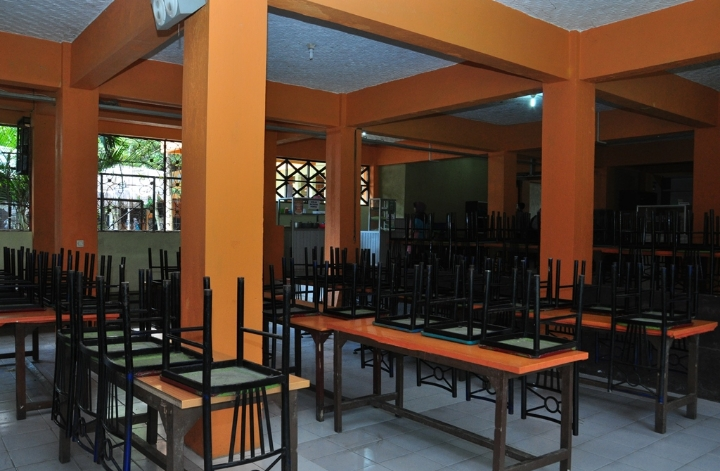
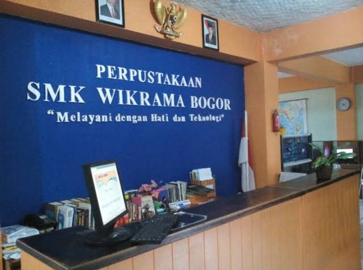

<!DOCTYPE html>
<html>
  <head>
    <meta charset="utf-8">
    <meta name="viewport" content="width=device-width">
    <title>replit</title>
    <link href="style.css" rel="stylesheet" type="text/css" />
  </head>
  <body>
    <script src="script.js"></script>
  </body>
</html>
<html>
    <head>
        <title>Rekayasa Perangkat Lunak</title>
        <link href="style.css" rel="stylesheet">
    </head>
    <body>
        <div class="container">
            <nav>
                <ul>
                    <li class="logo"><a class="logo-text">1. Sejarah Wikrama</a></li>
                    <li><a class="active" href="#home">2. Matrikulasi</a></li>
                    <li><a href="#">3. Kantin Wikrama</a></li>
                    <li><a href="#">4. Perpustakaan</a></li>
                    <li><a href="#">5. Kontak</a></li>
                </ul>
            </nav>
        </div>
    </body>
</html>
<div class="content1">
						     <div class="text1">
						          <div class="text">
						                <p id="tag">
						                     <mark>Sekolah Menengah Kejuruan</mark>
						                </p>
						                <h1>Sejarah Wikrama</h1>
						                <p>SMK Wikrama Bogor didirikan oleh Ir. Itasia Dina Sulvianti dan Dr.H.RP Agus Lelana dibawah naungan Yayasan Prawitama pada tahun 1996 di bekas gudang KUD. Kompetensi keahlian yang pertama dibuka pada saat itu adalah sekretaris dengan jumlah hanya 34 siswa.
<p>Seiring berjalannya waktu, jumlah siswa SMK Wikrama Bogor setiap tahunnya terus bertambah. Sehingga pada tahun 2001, secara bertahap SMK Wikrama Bogor menempati gedung yang lebih luas diatas tanah ± 5000m2, berlokasi di Jalan Raya Wangun Kelurahan Sindangsari Kota Bogor. Hingga saat ini, SMK Wikrama Bogor  memiliki 1596 siswa dengan 51 guru pendidik.
  <p>Kompetensi keahlian di SMK Wikrama Bogor pun terus berkembang. SMK Wikrama Bogor membuka 7 kompetensi keahlian, diantaranya (1) Otomatisasi dan Tata Kelola Perkantoran; (2) Teknik Komputer dan Jaringan; (3) Rekayasa Perangkat Lunak; (4) Multimedia; (5) Bisnis Daring dan Pemasaran; (6) Tata Boga; dan (7) Perhotelan.
    <p>Kesuksesan SMK Wikrama Bogor saat ini tentunya tidak lepas dari sejarah SMK Wikrama Bogor  mulai dari membentuk visi dan misi, kerja keras hingga diakui dunia internasional hingga prestasi dan pengharagaan yang didapatkan SMK Wikrama Bogor sejak awal didirikan. Berikut sejarah yang dilalui SMK Wikrama Bogor berdasarkan urutan tahun.
						                </p>
						           </div>
						       </div>
						       
						</div>
      <div class="content2">
                <div class="card">
                    <h2><b>Martikulasi</b></h2> 
                    <p>Di SMK Wikrama ada yang namanya Martikulasi, Martikulasi ini berlangsung selama satu bulan, Martikulasi adalah semacam pengenalan lingkungan-lingkungan sekolah. Karena sekarang sedang pandemi Martikulasi berlangsung secara online dengan melakukan zoom atau meet dan seharusnya jika tidak pandemi Martikulasi berlangsung di sekolah secara tatap muka</p> 
                </div>
                <div class="card">
                    <h2><b>kantin Wikrama</b></h2> 
                    <p>Menyediakan makanan jajanan yang terjangkau juga merupakan peluang baru bagi
sekolah untuk meningkatkan status gizi peserta didik, sehingga memperkuat
 kemampuan dasar dalam meningkatkan prestasi peserta didik.
Bahwa pada hakekatnya pengeloaan kantin yang baik membutuhkan sinergisme semua pihak yang terlibat didalamnya. Dengan memahami peran kantin sekolah yang muti guna, maka diperlukan ketentuan untuk mengatur pengelolaan kantin, terutama dalam mewujudkan kantin yang sehat.</p> 
                  
                </div>
                <div class="card">
                    <h2><b>Perpustakaan Wikrama</b></h2> 
                    <p>Di perpustakaan SMK Wikrama terdapat berbagai macam jenis buku dimulai dari buku pelajaran, kejuruan, novel, komik dll</p> 
                  
      div class="clearfix"></div>
            <footer class="footer-main">
                <div class="footer-grid">   
                      <section class="footer-1">
                        <h4>Alamat</h4>
                          <p>Jl. Raya Wangun Kelurahan Sindangsari Bogor Timur 16720 </p>
                        <h4>Telepon</h4>
                        <p>081909242411(Whatsapp)</p>
                      </section>
                     <section class="footer-3">
                       <h4>Sosial Media</h4>
                         <p>Instagram : @rplwikrama</p>
                         <p>Youtube : RPL Wikrama</p>
                     </section>
                </div>
            </footer>          